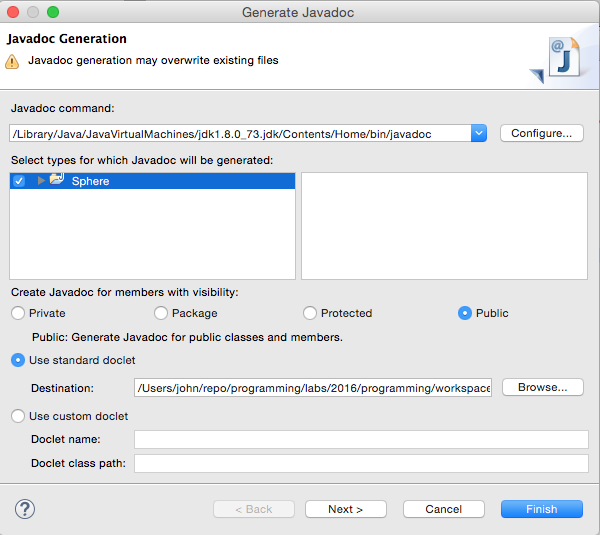
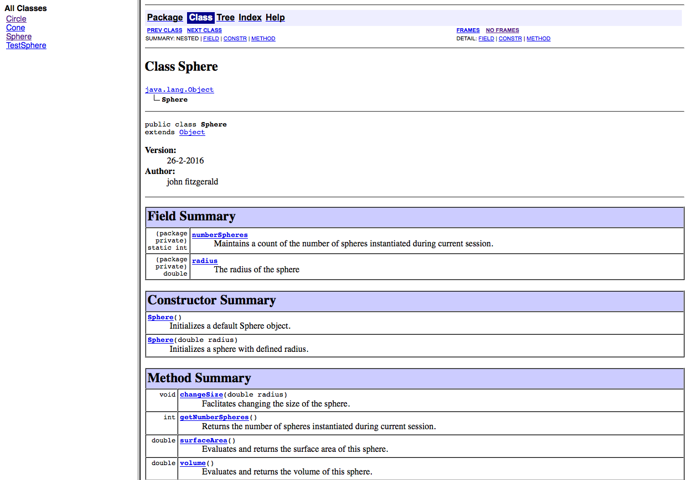
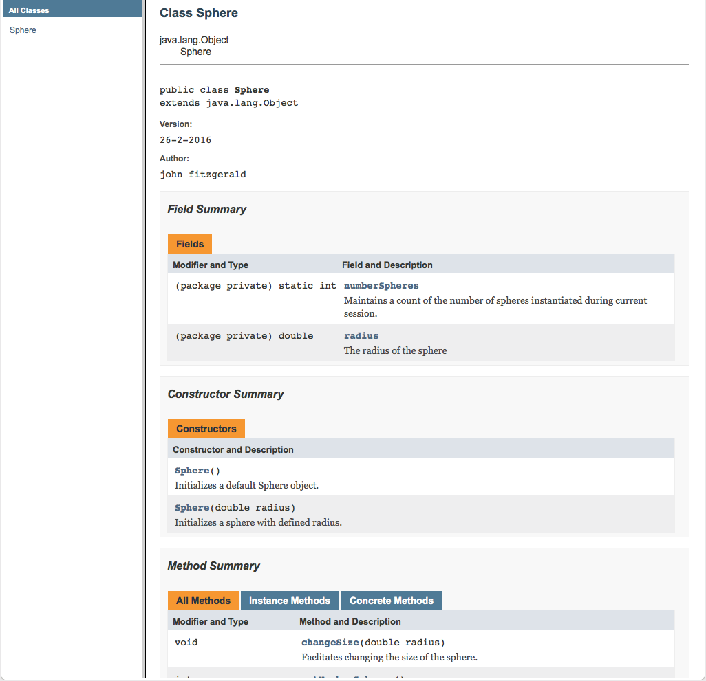

Assignment 1: This is a sample solution set to Assignment 1 which is based on materials contained in the preentations and labs in the first 3 topics, namely, Introduction to Java programming language, Analysis & refactoring class and Object Interaction. There are 4 questions, the first 2 relating to simple class design, the 3rd on the subject of string manipulation and the final one requiring an extension to the BlueJ clock display.
A sample solution for each question is available by clicking on the links below.
The solutions comprise BlueJ projects in which the assignment skeleton code has been completed for each question.
A note regarding documentation
The JavaDoc documentation generating tool included with BlueJ does not facilitate fine-grained configuration.
Here is a link to an online video describing the use of JavaDoc with BlueJ.
Eclipse, which we shall be switching to shortly, provides configuration options as shown in Figure 1.
A Field Summary that includes package private and public fields is generated by default in BlueJ. Fields that are private are not included. See Figure 2.
Whether or not the Field Summary is documented in Eclipse is determined by how JavaDoc is configured. For example, Figure 3 illustrates the situation where private fields and methods are included in the documentation. This might be appropriate for a development team. It would be an easy matter to change the configuration appropriate to a public API.
Although non-standard block tags such as @brief & @file are presented in the sample Cone class, it should be noted that these require special measures if they are to influence JavaDoc output. Otherwise they are ignored in generating documentation. Such customization is beyond the scope of the course. A reference is available here.



Javadoc - See here for default list tags (such as @param, @result): http://www.oracle.com/technetwork/articles/java/index-137868.html Customized tags, such as @brief, require separate treatment if they are to be reflected in the JavaDoc output. This may be addressed when Eclipse IDE is introduced to this programming module.
Style Guide - The Google Java Style Guide is located here: https://google.github.io/styleguide/javaguide.html
Commenting - Use tags where appropriate such as for parameters and return. Class and instance variables commented separately. For example numberSphere, which is a class variable, might better be separately commented on where it is declared.
/**
* Constructs a new sphere object defined by user-supplied parameter.
* @param radius The radius of the sphere.
* numberSpheres Increments the numberSphere field by one.
*/
public Sphere(double radius)
{
setState(radius);
numberSpheres += 1;
}What happens here? -
/**
* Method to set the state of the Sphere
*/
public void setState(double radius)
{
this.radius = radius;
isValid(radius);
set++;
}Any views on the following method? -
/**
* Method to get the volume of a sphere
* @return the volume of sphere
*/
public double volume()
{
double fourThirds = 4.0/3.0;
double cubed = 3.0;
return fourThirds * Math.PI * Math.pow(radius,cubed);
}This method performs two tasks. A good idea? -
/**
* Method to check the number of spheres
* @pram numberSpheres
*/
public int getNumberSpheres()
{
if(numberSpheres == set)
{
return numberSpheres++;
}
else
{
return numberSpheres;
}
}Consistency? -
public class Book
{
private String title;
private String author;
private String isbn; // <---- ?
private int numberPages; // <---- ?
private boolean borrowed =false; // <---- ?
private int numberBorrowings;
}Could this code be more compact without loss of clarity? -
/**
* Method to check the loan status of a book, checks the borrowed status to return a result
* string
*/
public String loanStatus() // print a message
{
if(borrowed == true ) {
return " is not available: presently on loan";
}
else {
return "available ";
}
}Any observations on this snippet of Library class? -
public class Library
{
private ArrayList<Book> books;
private Book valueObj; // <----------- ?
...
...
public String loanStatus(Book book) {
return valueObj.loanStatus();
}Superfluous instance variable introduced -
public class Sphere
{
double radius;
static int numberSpheres;
private boolean isValid; // <----------------?
/**
...
}Documentation okay? Consistent with implementation? -
/**
* Calculates the surface area, volume and circumference of the great circle.
* if the parameters are changed. New radius must be >0.
* @return the new surface area, volume and circumference of the great circle.
* If a negative value is entered a warning is provided.
*/
public void changeSize (double radius)
{
setState(radius);
}Code bloat, documentation & styling -
/**
* Makes it impossible for a user to input a negative value.
* If a negative value is entered a warning is provided.
* Check that each inputted value is valid.
*/
public boolean isValid(double value)
{
if(value>0) {
return true;
}
else {
return false;
}
}Even this, although an improvement, could be more concise:
public boolean isValid(double value)
{
return (value>0)? true:false;
}For example:
public boolean isValid(double value)
{
return value > 0;
}API - Changes to API discouraged. Example some unspecified methods introduced:
public class Book
{
public String getAuthor(){...}
public String getIsbn(){...}
...
...
}Needs review: -
/**
* A method to determine if the library contains a particular book.
*/
public String hasBook(Book book)
{
if (books.contains(book)) {
return(book.loanStatus());
}
else {
return(book.loanStatus());
}
}Documentation & control flow -
/**
* Checks if sphere is made of posible numbers, will show warning if not.
*/
private boolean isValid(double value)
{
if(value > 0) {
return true;
}
else {
System.out.println("No Spheres for you");
}
return false;
}Verbose & Documentation -
/**
* Checks availablity of book.
*/
public boolean isBorrowed()
{
if(borrowed == false) {
return false;
}
return true;
}
// Better?
public boolean isBorrowed()
{
return borrowed;
}Style (Formatting) - Horizontal whitespaces
return value>0; // no return value > 0; // yes if(isValid(radius)){ // no
this.radius = radius;
} if (isValid(radius)) { // yes
this.radius = radius;
} int count = 0;
for(int i=0; i<books.size(); i++)
{
count+=1;
} int count = 0;
for (int i = 0; i < books.size(); i++)
{
count += 1;
}See Google Style Guide https://google.github.io/styleguide/javaguide.html#s4.6.2-horizontal-whitespace
Logical ambiguity - Missing check: is book currently on loan?
/**
* Method to check if a Book is in the Library catalogue
* @param book The book to be searched
* @return Whether the book is in library
*/
public String hasBook(Book book)
{
boolean check = books.contains(book);
String name = book.title;
if(check)
{
return "Book title "+ name + " in stock and available to borrow";
}
return "We do not stock book title " + name;
}Verbose -
public static boolean endsWith(String s1, String suffix)
{
if(s1.endsWith(suffix)) {
return true;
}
return false;
}public static boolean endsWith(String s1, String suffix)
{
return s1.endsWith(suffix);
}Verbosity & documentation issues: -
/**
* clearing a particular book from the ArrayList
* @param book
*/
public boolean removeBook(Book book)
{
if (books.contains(book))
{
books.remove(book);
return true;
}
else
{
System.out.println("cant find book");
return false;
}
}And again:
/**
* Uses an if-else statement to facilitate the removal of a book from the
* books collection in a library
* @return Returns whether the library contains a book and facilitates its
* removal from the library
*/
public boolean removeBook(Book book)
{
if(books.contains(book))
{
books.remove(book);
return true;
}
else
{
return false;
}
}/**
* Facilitates removal of book from list books.
* @param book The book to be removed.
* @return Returns true if book successfully removed.
*/
public boolean removeBook(Book book)
{
return books.remove(book);
}Verbose -
public static int length(String s1, String s2)
{
String s = s1+s2;
return s.length();
}Compare to:
public static int length(String s1, String s2)
{
return (s1 + s2).length();
}or:
public static int length(String s1, String s2)
{
return s1.concat(s2).length();
}Is it a good idea to include a print statement here? -
public static String reverse_1(String string)
{
StringBuilder revString = new StringBuilder(string);
System.out.println(revString.reverse()); // <---- ?
return revString.toString();
}Preferrable:
public static String reverse_1(String string)
{
return new StringBuilder(string)
.reverse()
.toString();
}which is same as this inline version:
public static String reverse_1(String string)
{
return new StringBuilder(string).reverse().toString();
}Horizontal whitespace - Note the space between operand and operator:
numberSpheres ++;Convention requires no space between operand and operator (++):
numberSpheres++;Documentation and parameter naming -
/**
* Resets the radius of sphere object
* @param radius The changed radius of the sphere // <---- Excessive number whitespaces
*/
public void changeSize(double newRadius)
// facilitates radius reset <--- duplicate comment
{
radius = newRadius;
} /**
* Resets the radius of sphere object
* @param radius The changed radius of the sphere
*/
public void changeSize(double radius)
{
radius = radius;
}Redundant block & comment -
public static boolean isEqual(String s1, String s2)
{
{
return s1.equals(s2);
}
//return s1.equals(s2);
}This is sufficient:
public static boolean isEqual(String s1, String s2)
{
return s1.equals(s2);
}Any views on this snippet from Sphere class? -
/**
* Here's the constructor that will create the default size of my sphere
* @returns setState of the sphere
*/
public Sphere ()
{
setState(10.0);
}Method design - Better to avoid large blocks in, for example, if-else as shown here:
public void sumEven(int low, int hi)
{
if((low % 2 == 0) && (hi % 2 == 0)) {
// Do something: 25 lines of code here
}
else {
// Do something else: 1 line of code here
}
}Redesign:
public void sumEven(int low, int hi)
{
if((low % 2 != 0) || (hi % 2 != 0)) {
// Do something: 1 line code
return;
}
// Do something: 25 lines of code here
}Make use of existing methods -
public static boolean isPalindrome(String s)
{
String s1 = s.replaceAll("[^a-zA-Z]", "");
String s2 = "" + new StringBuilder(s1).reverse();
return s2.equalsIgnoreCase(s1);
}public static String reverse(String string)
{
StringBuilder sb = new StringBuilder(string);
return "" + sb.reverse();
}
public static boolean isPalindrome(String s)
{
String s1 = s.replaceAll("[^a-zA-Z]", "");
return reverse(s1).equalsIgnoreCase(s1);
}This implementation of isBorrowed not quite correct: -
public boolean isBorrowed()
{
if (borrowed = true);
System.out.println(title + "On loan not available");
if (borrowed = false);
System.out.println(title + "Available to Loan");
return borrowed;
}Palindrome - Here is one submission in which the technique of recursion, not covered to date in class, is employed:
public static boolean isPalindrome(String s) {
if(s.length() == 0 || s.length() == 1) {
return true;
}
if(s.charAt(0) == s.charAt(s.length()-1)) {
return isPalindrome(s.substring(1, s.length()-1));
}
return false;
}And here is a similar solution available in Stackoverflow at http://stackoverflow.com/questions/4367260/creating-a-recursive-method-for-palindrome
public static boolean isPalindrome(String in) {
if(in.equals(" ") || in.length() < 2 )
return true;
if(in.charAt(0).equalsIgnoreCase(in.charAt(in.length-1))
return isPalindrome(in.substring(1,in.length-2));
else
return false;
}What happens here? -
public Sphere()
{
this.numberSpheres=numberSpheres+1;
}Variable naming - Two observations on following snippet:
variable name should begin with lower case
boolean validSphere;
unnecessary to introduce new variable here
public class Sphere
{
...
private boolean ValidSphere;
}Verbosity & logical issue -
/**
* Returns loan status of a specific book from library
* @param book
*/
public String hasBook(Book book)
{
if (books.contains(book))
{
return book.loanStatus();
}
else
{
return book.loanStatus();
}
}Unnecessary blocks -
public static String reverse_1(String string)
{
StringBuilder builder = new StringBuilder (string);
{
return builder.reverse().toString();
}
}public static int length(String s1, String s2)
{
String concatenated = s1 + s2;
{
return concatenated.length();
}
}Use camel case -
public static String reverse_2(String string)
{
String reverse_Str = ""; // <---- reverseStr
for(int i =string.length()-1; i>=0; i--)
{
reverse_Str = reverse_Str + string.charAt(i);
}
return reverse_Str;
}JavaDoc tag - @radius should be @param
/**
* An overloaded constructor with a variable radius
* @radius The radius of the Sphere
*/
public Sphere(double radius)
{
setState(radius);
this.numberSpheres = numberSpheres+1;
}A further example:
/**
* A default constructor for a book object.
* @ title = The title of the book.
* @ author = The author of the book.
* @ numberPages = The number of pages in the book.
* @ isbn = The ISBN of the book.
* @ borrowed = Sets the default to false to make the book available for loan
* @ numberBorrowings = Sets the default to zero as book has not been borrowed yet.
*/
public Book(String title, String author, int numberPages, String isbn)
{
this.title=title;
this.author=author;
this.numberPages=numberPages;
this.isbn=isbn;
borrowed=false;
numberBorrowings=0;
}Excessive number whitepaces -
/**
* Removes all books from the library.
*/
public void removeAllBooks()
{
books.removeAll(books);
}String object is immutable - Therefore, the parameter String object s is not changed in the following code.
public static boolean isPalindrome(String s)
{
s.replaceAll("[^a-zA-Z]", "");
...
...
}Create a modified copy. If, for example, s is No lemon, no melon. then sModifed becomes Nolemonnomelon. Punctuation and whitespace would be removed.
public static boolean isPalindrome(String s)
{
String sModified = s.replaceAll("[^a-zA-Z]", "");
...
...
}